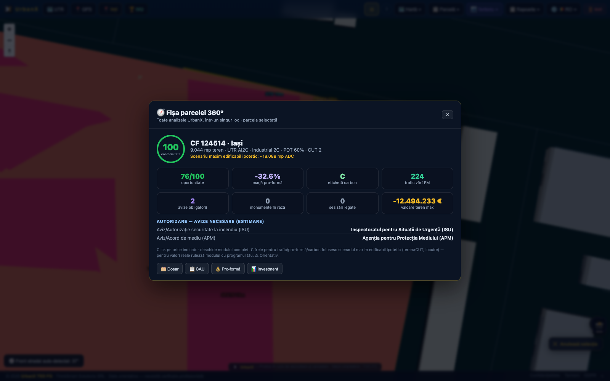

Studenții și cercetătorii lucrează cu date reale de UAT, PUG, cadastru și normative — pe aceeași platformă folosită azi de proiectanți și administrații, nu pe un exercițiu izolat.

Zone funcționale PUG, cadastru, regulamente — pe hărți reale de UAT-uri din România.
Randare 3D a teritoriului cu date reale (trafic, risc, context regional).
Fluxul complet DTAC/PTh/DE ca material didactic pentru cursuri de proiectare/legislație.
60 de indicatori cu formulă și sursă — bază solidă pentru teze și cercetare aplicată.
Studiu de caz real pe 42 de unități teritoriale, util pentru cursuri de administrație publică.
Studii teritoriale deja scrise (Smart City ~87 pagini) ca material de referință.
O platformă cu date reale și motoare funcționale e teren fertil pentru cercetare aplicată, nu doar predare.
Seturi de date urbane reale, structurate, pentru proiecte de cercetare și dizertații.
Metodologiile folosite (cohortă-componentă, model gravitațional) — teren pentru revizuire academică.
Propuneri de extindere a platformei ca proiecte de cercetare aplicată sau licență/disertație.
Cont demo pentru explorare, sau o discuție directă despre un parteneriat de cercetare/predare.